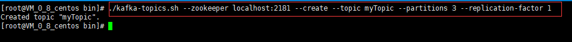
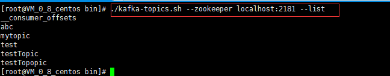
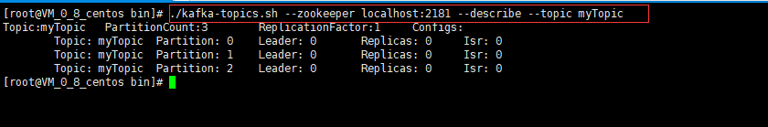
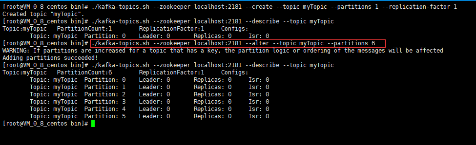

kafka的主题topic说明
1、kafka将消息以topic为单位进行归纳
2、topic特指kafka处理的消息源的不同分类
3、topic是一种分类或发布的一系列记录的名义上的名字。kafka的主题始终是支持多用户订阅的，也就是说一个主题可以被零个、一个或多个消费者订阅
常用主题相关命令
创建主题
bin/kafka-topics.sh --zookeeper localhost:2181 --create --topic myTopic --partitions 3 --replication-factor 1
说明：上面这条命令意思是创建名为myTopic的主题，分区数为3，副本因子为1

删除主题
bin/kafka-topics.sh --zookeeper localhost:2181 --delete --topic myTopic
说明：上面这条命令意思是删除名为myTopic的主题，特别要注意一点的是，删除主题需要kafka目录下的config/server.properties文件中delete.topic.enable=true
列出所有主题
bin/kafka-topics.sh --zookeeper localhost:2181 --list

列出某个主题的详细信息
bin/kafka-topics.sh --zookeeper localhost:2181 --describe --topic myTopic
说明：上面这条命令的意思是列出myTopic这个主题的详细信息

修改主题的分区数
bin/kafka-topics.sh --zookeeper localhost:2181 --alter --topic myTopic --partitions 6
说明：上面这条命令的意思是修改myTopic这个主题的分区数为6，特别要注意一点的是，在kafka中，分区数只能增加不能减少
